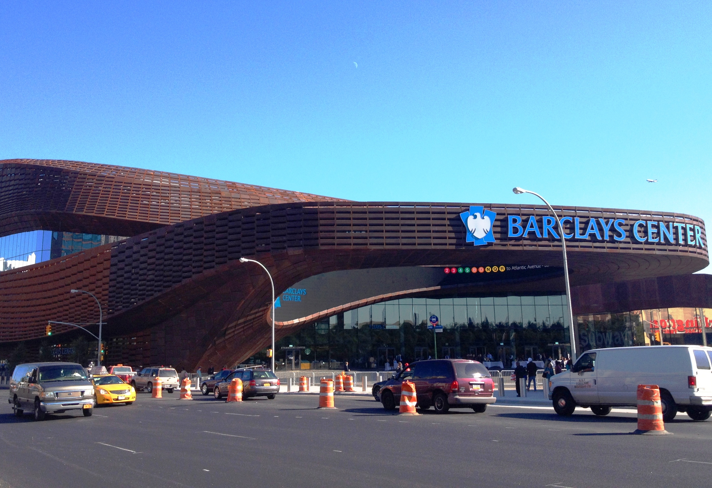

NYC Sports Venues
A variety of venues cater to sports fans, both casual and die-hard. A team exists for nearly every sport, and several are based within the five boroughs. Sports stadiums, such as Madison Square Garden, Yankee Stadium, City Field, and The Barclays Center, are home to many professional atheletes.
For those sports fans who may feel that these places are out of reach, there are venues, such as bars and restaurants, that will broadcast most games. Many of them are tailored to the casual sports fan. Some may present games in movie theaters!

Not all venues will focus on the local teams. Fans of teams outside of New York have venues available to them as well. While they are much harder to find, they do exist.
Below are a few links to recommended sports bars around New York City.